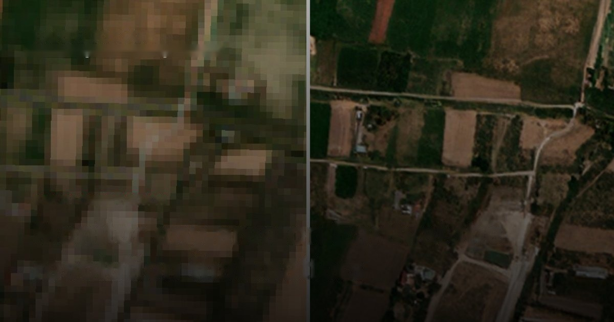
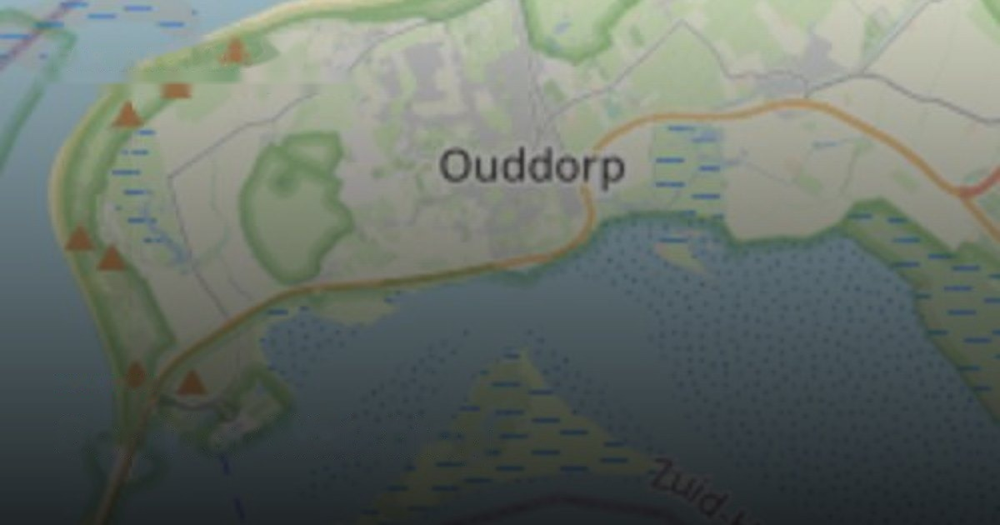
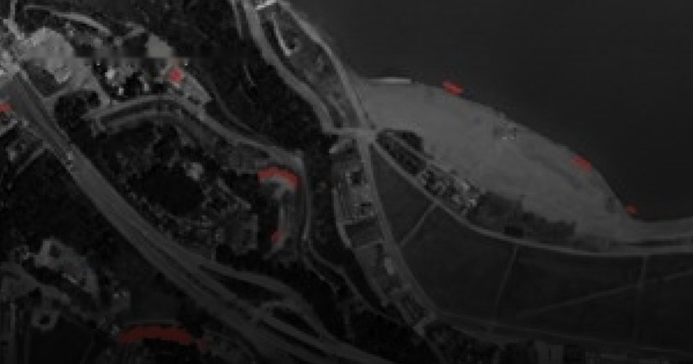
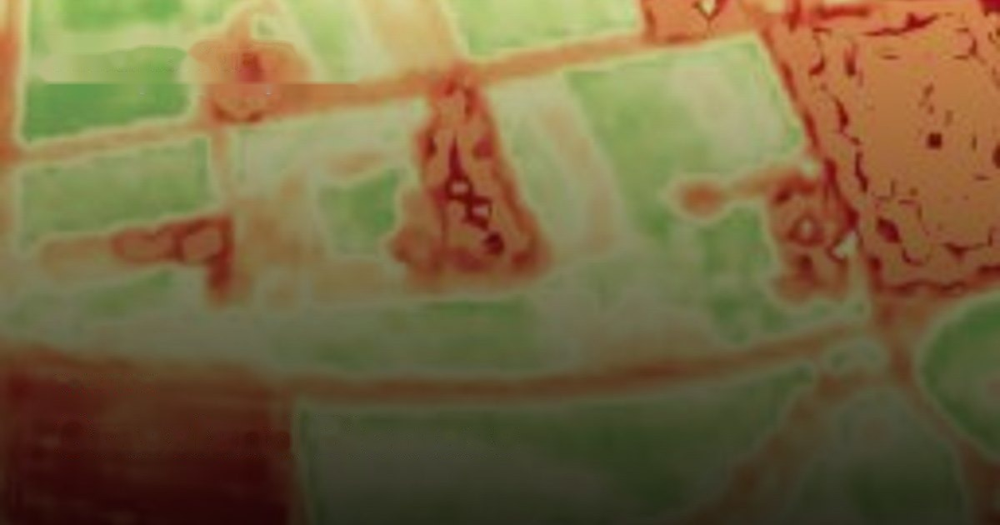

Watch any site on Earth.
Clearly.
Every major satellite and aerial source, fused into one continuously updated view of the ground — turned into answers you can act on.
What earth intelligence looks like in practice.

Change, watched continuously.
Pipelines, transmission lines, railways, borders — kept under constant watch for encroachment, disturbance, and anything new that shouldn't be there. You hear about it when it happens, not on the next site visit.
More info →
Construction that wasn't there before.
Automated detection of new build-out across wide areas — unpermitted structures, expansions, and ground disturbance flagged at national scale, without anyone scrolling a map.
More info →Ground truth for hard-to-reach places.
Frequent, high-resolution eyes on remote sites — exploration ground, contested terrain, disaster zones — where sending people is slow, costly, or unsafe.
More info →Industry solutions
Purpose-built monitoring for mining, agriculture, infrastructure, utilities, fire, and disaster response — each pairing the right data with the right analytics for that job.
Explore industries →Data sources
Enhanced visual, multispectral, SAR, elevation, and aerial — every layer, worldwide, continuously kept current.
Explore data →Sharper imagery, honestly made.
Our enhancement reconstructs cleaner, sharper detail from almost any sensor — optical or radar, commercial or free — without inventing pixels that were never there. Real detail, lifted; not guessed.



See your area, up to date.
Bring us the ground you need to watch. We'll show you what SkySpera can do with it.
Talk to us